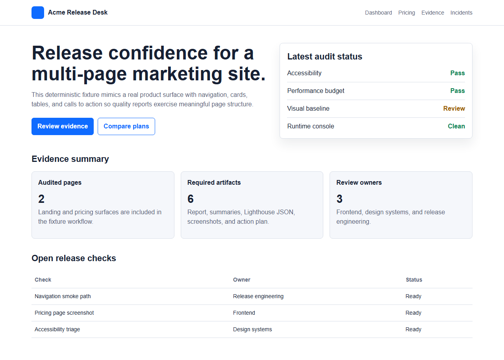

Live report preview
The frame below embeds the sample report.html committed under docs/proof/.
Inspectable OSS evidence
Web Quality Gatekeeper runs Playwright smoke checks, axe accessibility scans, Lighthouse budgets, and visual regression in a single CLI and GitHub Action. Every run emits an HTML report and a contract-checked JSON summary you can open, diff, and reproduce.
wqg audit
Primary CLI entrypoint for local runs and CI gating.
summary.json + summary.v2.json
Human report plus contract-checked machine outputs.
Published Evidence
Open the same report, summary, and raw evidence files a reviewer would use. Everything linked here comes from a committed fixture run and can be reproduced from the repository docs.
The frame below embeds the sample report.html committed under docs/proof/.

The HTML report is for humans; the JSON contract is for downstream automation.
{
"overallStatus": "pass",
"durationMs": 7621,
"rollup": {
"pageCount": 1,
"a11yViolations": 0,
"performanceBudgetFailures": 0
},
"page": {
"steps": {
"playwright": "pass",
"a11y": "pass",
"perf": "pass",
"visual": "skipped"
},
"metrics": {
"performanceScore": 0.99,
"consoleErrors": 0,
"failedRequests": 0
}
}
}Adopt In 5 Minutes
Public usage is split into two lanes. Use the GitHub Action in your own repository for CI gating, or run the CLI from a source checkout when you want local evaluation. npm publication is reserved for a later maintainer backfill release.
The supported consumer path for CI usage in a separate repository.
jobs:
web-quality:
runs-on: ubuntu-latest
steps:
- uses: actions/checkout@11bd71901bbe5b1630ceea73d27597364c9af683 # v4.2.2
with:
persist-credentials: false
- uses: Jahrome907/web-quality-gatekeeper@v3
with:
url: https://your-site.example
baseline-dir: baselinesUse this path when you want local evaluation before wiring CI.
git clone https://github.com/Jahrome907/web-quality-gatekeeper.git
cd web-quality-gatekeeper
npm ci
npx playwright install
npm run build
node dist/cli.js audit https://your-site.example --policy marketingKeep custom settings in a consumer-owned path such as .github/web-quality/config.json rather than copying repo-internal maintainer paths.
Workflow
One audit writes the review artifacts and summary contracts that teams usually assemble by hand across separate tools.
Validate the URL, apply SSRF-sensitive guardrails when needed, and pin the resolved host so redirects stay deterministic.
Playwright loads the page and captures runtime signals; axe, Lighthouse, and visual diff run against the same resolved target.
Every run writes report.html, summary.json, and summary.v2.json, plus optional baselines and trend artifacts.
The same summary contract drives PR comments, CI exit codes, and release tag movement when the workflow is configured for it.
Why Trust It
The project's public surface points to the rules, sample outputs, and compatibility notes that any consumer can verify.
schemas/summary.v1.json and schemas/summary.v2.json.wqg audit emits locally.action.yml inputs and outputs remain compatible unless explicitly extended in CHANGELOG.md.vX.Y.Z tags — never for prereleases.{kind=link}